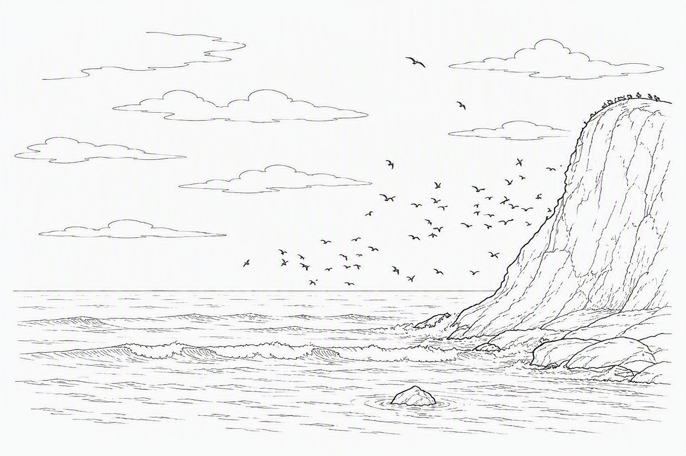
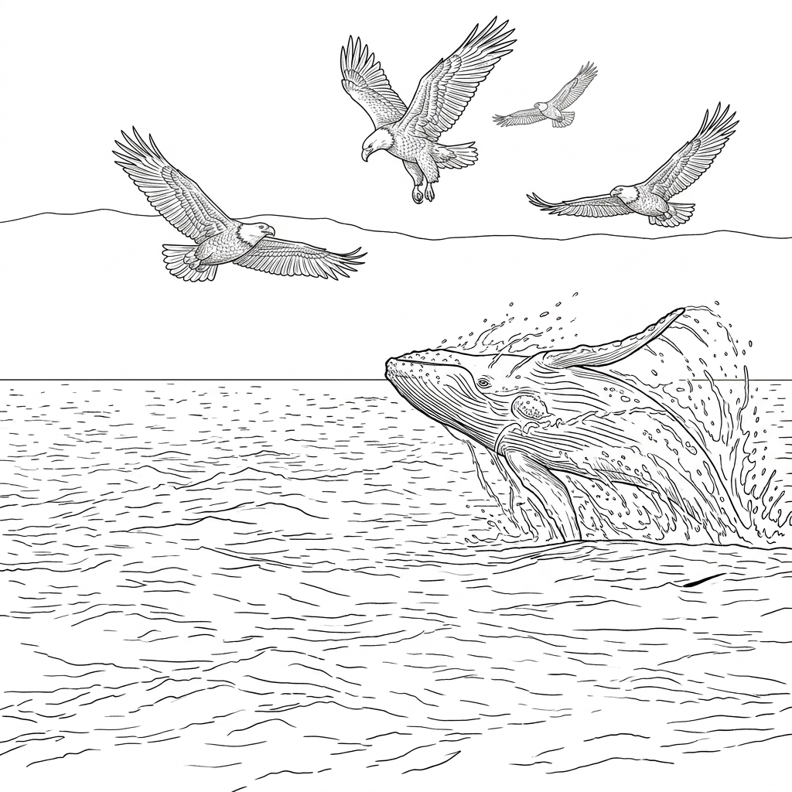
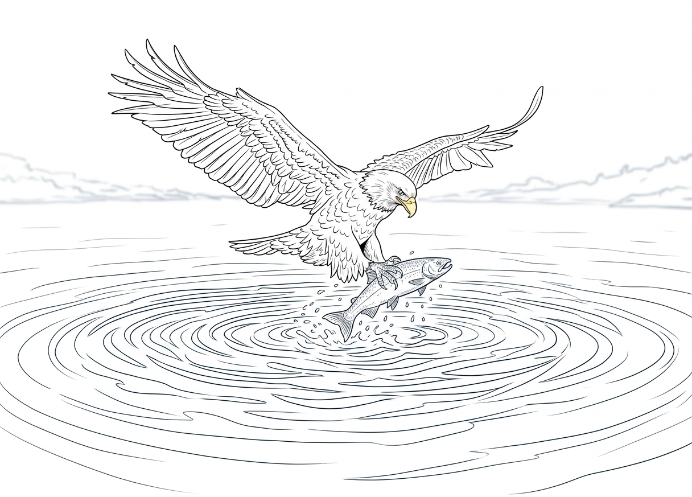

CHAPTER 01 OF 12
Spiritual Vision

Among the cliffs and coves where we lived, there were many gulls and all manner of seabirds.
At dusk, the setting sun would turn the steep rock walls a deep orange-red. Sea winds swept through the trees and shrubs along the cliffs, year after year, never ceasing. Because of this, the trees grew unusually strong. Their trunks and branches bent in the direction of the wind, yet they never fell.
In the great trees along the cliff's edge, the eagles built their nests. Massive nests were formed from layer upon layer of thick branches, firmly lodged among the high branches of the trees. Inside, the young eaglets were soft and downy, always stretching their open beaks toward the sky and crying out in thin, eager voices, waiting for their parents to return from the sea with food. The father and mother eagles took turns flying out to hunt, then returning to the nest with their catch.
The bald eagles of our region migrated south when winter came and returned north when summer arrived. To us, the earth and sea were a home that stretched far before us.
That summer, I was no longer a young eaglet. White feathers had begun to appear upon my head, and my talons had grown stronger than before. I loved climbing into the highest places and looking down upon the land and sea. I loved watching everything that was happening below.
Sometimes I would see a great blue whale break through the surface of the sea, sending a plume of warm breath high into the air through its enormous blowhole. The schools of fish nearby would scatter in alarm, some of them leaping from the water. Gulls, Arctic terns, albatrosses, storm petrels, and other seabirds were often drawn to the commotion caused by these great creatures. We would circle above them, chasing the wind, chasing the waves, and chasing one another.

When the sun went down, we would each return to our nests upon the cliffs. The rock walls would bathe in the last glow of evening, while the blue whales disappeared once more into the depths of the sea.
In those days, there was one thing I loved more than anything else: flying.
We eagles have extraordinarily keen eyes. From high above, I could see rabbits running across the ground, little squirrels darting among the trees, and even snakes hiding in the grass. Our sight was sharper than that of many other creatures, and diving from the sky to seize our prey was a skill that came to us almost as naturally as flight itself.
But there was one thing I could never seem to do well.
It was catching fish.
Fish moved beneath the glittering surface of the water. Sunlight pierced the waves, and their shapes appeared and disappeared among the shifting reflections. Whenever I thought I had fixed my eyes upon the right one, I would dive, stretch out my talons—and the fish would already be somewhere else.
Again and again, I failed.
The eyes of an eagle may see far, but that does not mean an eagle always sees a fish clearly beneath the water. In those days, I was still learning.
One afternoon, the heat was heavy, and almost no wind stirred the air. I had spent the entire day practicing. I watched the surface of the sea and dove again and again; again and again I stretched out my talons; again and again I grasped nothing but water.
At last, I was exhausted.
I settled onto a branch, breathing heavily, and stared out over the sea.
That was when I noticed a group of golden eagles resting on the other side of the cliffs. They were preparing to continue their migration south.
Leading them was an old golden eagle.
He was quiet and watchful, a bird who spoke very little.
But before long, I realized that he was watching me.
After a while, he spoke.
“You must learn to look upward.”
“What?” I lifted my head.
He did not answer my question. Instead, he said,
“Try looking upward. You will see farther, and you will see more clearly.”
“I already know that. My parents taught me from the time I was young to keep watch over everything around me.”
I spoke with a touch of impatience.
The golden eagle did not argue. He simply raised his head and gazed into the distance. Then he pointed with his beak.
“Look at that little island.”
I followed his gaze.
The island was far away. A gull stood upon the rocks, a snake hanging from its beak. The snake was still flicking its tongue.
I was surprised. It was so far away, yet I could see it.
The golden eagle said,
“Do not look at the world with the light behind you. Learn to see the world through the light.”
I looked at him.
“Through the light?”
“Yes.” He paused, then continued. “When you used to watch the fish, you paid attention only to where it was.”
He turned his gaze toward the sea.
“But the fish will not wait there for you.”
“When you begin your dive, the fish is still moving. You must watch the direction in which it is swimming and judge its speed. You must see, in your mind, where it will be before it arrives there.”
Slowly, I began to understand.
He continued: “When you finally extend your talons, it is not enough to see where the fish is. You must know where it is going.”
“But how can I know where it will go?” I asked.
“You must observe,” he replied.
“Watch how it swims. Watch how the current moves. Watch the direction it takes among the waves. You are not merely watching where it is. You are watching where it is going.”
Then he added, “True vision is not merely seeing a thing.” He paused. “It is seeing what is happening within it.”
I remembered those words.
I flew toward the sea again. This time, I did not dive immediately.
First, I watched. The fish swam to the left, paused, and then turned forward. I began to notice the rhythm of its movement, the speed at which it traveled.
Then I opened my wings. I dove. The sea wind rushed through my feathers. The fish was still moving. I adjusted my course and descended farther. I stretched out my talons. And in that instant, I caught it.

For the first time, I truly caught a fish.
I flew back to the branch. Only then did I understand that seeing and understanding are two different things.
I was full. But more important than a full stomach was a joy I had never known before.
I looked toward the old golden eagle. I began to understand that he was more than a fellow traveler on the migration.
He was a teacher.
The next day, I encountered something else. A fox was chasing a mother mouse and her two little ones.
I watched from above. The fox was large. The mother mouse was small. The two little mice were smaller still. I quickly realized that if I could not catch the fox, the two little mice would be easy prey. I was preparing to dive when the golden eagle stopped me.
“Are you going to catch those two little mice?”
“Of course.” I did not understand. “Why not?”
He said, “Have you not seen?”
I looked down again. “Seen what?”
“The mother mouse.”
I saw her. She was standing between the fox and her young.
The golden eagle said, “She knows she may die, yet she still stands between them and danger.”
I fell silent.
“She is willing to give her life to protect her children.”
After a while, the golden eagle asked, “Do you remember what I taught you yesterday?”
I knew what he meant.
“Look upward?”
“Yes.”
I was unconvinced. “But what does that have to do with the mice?”
The golden eagle did not rebuke me. He simply said, “When you look at anything, do not look only at what is on the surface.”
He lifted his head toward the sky. “Learn to see through the light.”
For me, this was far more difficult than catching fish. I did not know how to do it.
I followed his instruction. I shifted my position so that the sunlight fell from above, and then I looked down again.
The fox. The mother mouse. The two little mice.
At first, I saw nothing different. But the other golden eagles were watching me in silence. It seemed they were waiting for me to see something I had not seen before.
So I tried again. I lifted my eyes toward the sky and watched the sunlight. Then, following the light, I looked down toward the earth.
And in that moment, I suddenly saw things I had never seen before.
Above the fox's head hung a small cloud of darkness.
Above the mother mouse was a small white cloud.
The white cloud was soft and pure, like a tuft of cotton illuminated by the sun. But the cloud above the fox seemed dark and heavy, as though it concealed something hidden and evil.
For the first time, I understood that the same world is not seen in the same way by every pair of eyes. Before that day, I had known only how to look with my eyes. Now, it seemed that I had begun to glimpse another world.
The golden eagle looked at me. He knew that I had seen it. He did not explain. Instead, he asked,
“What do you see?”
I thought for a moment. “I see black clouds and white clouds above their heads. The one who is good has a white cloud.”
The golden eagle nodded. “Good.”
I looked at him. “What is good?”
But he did not answer. He simply looked again at the mother mouse. “Some things cannot be seen with the eyes alone.”
I did not fully understand. But I remembered his words.
Just then, one of the golden eagles suddenly took flight. From high above, he plunged toward the earth and carried the fox away. The mother mouse immediately led her two little ones back into their hole.

After that day, I began to watch more carefully. I practiced what the golden eagle had called “seeing through the light.” I watched the sky, the sea, the wind, the trees, the animals—and people. Gradually, I began to notice something strange. Above some creatures, there seemed to be a small cloud of white. It was soft and pure, like cotton touched by sunlight. Above others, there seemed to gather a dark cloud, gray and heavy.
Whenever I saw a white cloud or a dark one, I remembered the words of my teacher: “Learn to see through the light above.”
Several days later, I could no longer keep my question to myself. “Teacher, will I always have this kind of vision?”
He was silent for a while. Then he answered,
“Not necessarily.”
I was surprised. “Why?”
He said, “Because eyes grow tired, and the heart can grow dull.”
I became quiet.
“If you depend only upon your own eyes, one day you will begin to see only the surface again.” He continued: “You must keep looking upward. See through the light.”
I wanted to ask him more. But he said nothing further. He simply gazed into the distance. After a while, he spoke slowly.
“Not every eagle will see the world in the same way.”
I looked up at him. “Then why was I allowed to see?”
He did not answer me directly. Instead, he said, “We were all fashioned by the hand of the Creator. He gives each eagle different wings, and He gives each eagle a different path.”
I asked, “Then what am I supposed to do?”
He looked toward the horizon. “When you truly understand what you have been given to see, you will know.”
This time, I did not ask another question. I knew that some answers are not meant to be known until their appointed time.
That evening, I flew higher than I had ever flown before. The sky was clearer than usual. The sun was sinking in the west. Golden light fell across the sea like a road stretching into the distance.
I suddenly remembered the words of my teacher:
“Learn to see the world through the light.”
I gazed upon that light. And for the first time, I wondered if he had never really been teaching me how to catch fish at all. Perhaps he had been teaching me another way of seeing the world.
A few days later, the golden eagles prepared to continue their migration south. My heart was filled with things I wanted to say to my teacher.
I wanted to tell him what I had learned.
I wanted to tell him that he had changed the way I saw.
But in the end, I could not say any of it. I only wished that he would stay. Yet the golden eagles began to spread their wings, one after another. They flew south. I stood upon the cliff and watched them grow smaller and smaller. Their forms gradually faded into tiny dark specks. Then, even those specks disappeared beyond the distant horizon.
My teacher was truly gone. The wind came sweeping in from the sea. I stood there for a long time without moving. And then I remembered everything he had left with me.
Look upward.
See the light.
See the world through the light.
I knew that I had been given eyes to see something I had never seen before. I gazed toward the place where the golden eagle had disappeared. For a long while, I said nothing. Then, facing the distant sky, I called out with all my strength:
“Yes. I will remember.”
🌟 Finished this chapter?
Fly over and answer five questions about "Spiritual Vision" to earn stars!
Fly to get stars